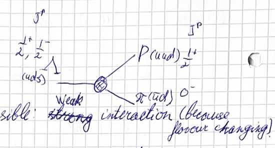
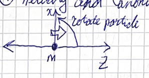
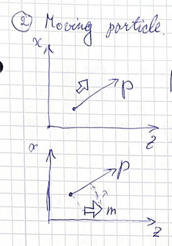
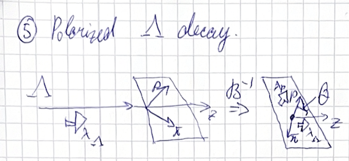
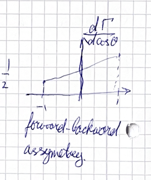
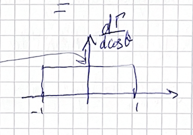

(2024) Lecture 6
Presenter: Mikhail Mikhasenko
Note Taker: Ilya Segal
1 Λ Baryon Decay: Weak Interaction, Parity Violation, and Matrix Element
1.0.1 Recap: Λ → p + π⁻ Decay

The decay considered is the Λ baryon decaying into a proton and a negative pion:
Λ → p + π⁻
1.1 Type of interaction
This decay proceeds via the weak interaction because it changes flavor. The flavor change is:
Λ(uds) → p(uud) + π⁻(ūd)
The strangeness changes from −1 to 0. Only weak interactions can change strangeness; strong interactions preserve flavor. Since the weak interaction violates parity, the decay does not conserve parity.
1.2 Variables describing the process
This is a 1-to-2 decay. In the center‑of‑mass frame (Λ at rest), the proton and pion are emitted back‑to‑back. The magnitude of their momenta is fixed by the masses. There is no continuous angular variable because there is no reference direction. The only discrete indices are the spin projections:
| Particle | Composition | Spin | J^P |
|---|---|---|---|
| Λ | uds | 1/2 | \frac12^+ |
| p | uud | 1/2 | \frac12^+ |
| π⁻ | ūd | 0 | 0^- |
We may choose the z -axis along the proton momentum. Because weak interactions do not conserve parity, the final state can be a mixture of parity eigenstates even though the Λ is a parity eigenstate.
1.3 Matrix element
The amplitude is written as
H_{\lambda} = \langle p(p_z),\tfrac12,\lambda | \hat{T} | \Lambda(0),\tfrac12,\lambda_\Lambda \rangle,
where \lambda and \lambda_\Lambda are the helicity of the proton and the spin projection of the Λ, respectively. Conservation of angular momentum requires \lambda = \lambda_\Lambda . The amplitude depends only on this discrete index, not on any continuous variable. With \lambda_\Lambda = \pm\frac12 , we have two independent matrix elements: H_{1/2} and H_{-1/2} .
1.4 Unpolarized decay width
The unpolarized decay width is
\Gamma_\Lambda = \frac{1}{2m_\Lambda} \cdot \frac{1}{2} \sum_{\lambda_\Lambda} \left( |H_{1/2}|^2 + |H_{-1/2}|^2 \right) \cdot \frac{2p}{8\pi m_\Lambda},
where p is the magnitude of the three‑momentum in the Λ rest frame. The angular integration gives a factor of 1 because the decay is isotropic. This is the main decay channel and determines the Λ lifetime.
Note on the factor 1/2 : The average over initial spin states originally gives four terms, but two vanish because \lambda = \lambda_\Lambda must hold. Only two terms remain, so the 1/2 factor is still correct.
1.5 Lifetime and experimental signature
The Λ lifetime is about 10^{-9}\,\text{s} , which is long for a particle produced in high‑energy collisions. It travels meters in the detector before decaying into a proton and a pion. This gives a clean signature: a secondary vertex far from the primary vertex, with two charged tracks.
1.6 Preview: direction dependence
The decay becomes more interesting when the Λ has a preferred direction in space (e.g., momentum in the lab frame). One can use that direction as an axis. Boost along the momentum direction into the Λ rest frame, but take the z -axis from the original (lab) frame. Measuring decay angles with respect to this axis defines the helicity frame. This will be discussed after a brief treatment of helicity states.
2 Helicity and Canonical State Construction
2.1 Helicity state
The helicity state |p,j,\lambda\rangle_{\text{hel}} is obtained by starting with a particle at rest in the canonical state |0,j,\lambda\rangle_{\text{can}} , boosting it along z to give it momentum, and then rotating it into the desired direction:
|p,j,\lambda\rangle_{\text{hel}} = R(\theta)\,B_z\,|0,j,\lambda\rangle_{\text{can}} .
Here \lambda is the helicity — the spin projection onto the direction of motion. Boosting does not affect the spin projection; only the subsequent rotation changes the momentum direction.
Properties of helicity states:
- If you rotate a helicity state, the momentum is rotated but the helicity eigenvalue stays the same. This is immediate from the definition: an additional rotation can be combined with the existing one, so it only changes the momentum direction.
- Boosting a helicity state is more subtle because a boost does not commute with a rotation; the spin projection becomes a linear combination of different helicities. The mathematical relation involves a Wigner rotation: for any combination of boosts and rotations, one can find a rotation that relates the two operations.
2.2 Canonical state
The canonical state |p,j,m\rangle_{\text{can}} (with m the z -axis projection) is also constructed from the rest frame, but through a three-step procedure:
|p,j,m\rangle_{\text{can}} = R(\theta)\,B_z\,R^{-1}(\theta)\,|0,j,m\rangle_{\text{can}} .
First you rotate the rest state by -\theta about the y -axis, then boost along z , and finally rotate by \theta to arrive at the desired momentum direction. Intuitively, you first “tilt” the spin axis so that after the boost and final rotation you end up with a spin eigenstate along z .
2.3 Notation
When I write |p,j,m\rangle without qualification, you must ask: is it canonical or helicity? By convention, m usually denotes the z -axis projection, while \lambda denotes helicity. It is better to indicate explicitly, e.g., |p,j,m\rangle_{\text{can}} and |p,j,\lambda\rangle_{\text{hel}} . I may sometimes omit these labels due to haste, but you should be careful.
| State type | Label | Meaning |
|---|---|---|
| Canonical | m | z -axis projection of spin |
| Helicity | \lambda | spin projection onto direction of motion |
2.4 Transformation of canonical states under rotation
Consider rotating a canonical state. Using its definition, we insert R^{-1}R and combine rotations. The result is
R(\alpha)\,|p,j,m\rangle_{\text{can}} = \sum_{m'} D^{j}_{m'm}(\alpha)\,|p',j,m'\rangle_{\text{can}},


where p' = R(\alpha)\,p is the rotated momentum. The momentum does change under rotation, as a student correctly pointed out. The Wigner D -functions D^{j}_{m'm} are the matrix elements of the rotation operator in the |j,m\rangle basis.
The definition of the canonical state ensures that after the boost and final rotation, the spin projection is still quantized along the z -axis, not along the momentum direction. This is the key difference from the helicity state.
3 Helicity Frame and Polarized Lambda Decay
The helicity frame is the rest frame of a particle obtained by boosting from a frame where it was moving. (see Figure 3) For a lambda decay, the direction of motion of the lambda in the lab frame defines the z axis after the boost. This gives the helicity frame.

The helicity angle is the decay angle measured using one of the daughter particles (particle number one) as the reference, after boosting to the rest frame. In the helicity frame, the two daughter momenta are exactly opposite.
The decay plane is formed by three vectors: the original lambda direction and the two daughter momenta. Knowing the original lambda direction gives an axis, and the angle defines the plane.
The helicity amplitude for the decay \Lambda \to p \pi is
A_{\lambda_\Lambda \lambda_p}(\theta) = H_{\lambda_\Lambda} d^{1/2}_{\lambda_p \lambda_\Lambda}(\theta),
where H_{\lambda_\Lambda} are helicity transition matrix elements and d^{1/2} are the reduced Wigner d -matrices for spin-1/2.
The d^{1/2} matrices have explicit entries:
| \lambda_p \backslash \lambda_\Lambda | +1/2 | -1/2 |
|---|---|---|
| +1/2 | \cos(\theta/2) | -\sin(\theta/2) |
| -1/2 | \sin(\theta/2) | \cos(\theta/2) |
The derivation proceeds by rotating the pion–proton state (aligned along z ) by the helicity angle \theta about the y axis, then applying the transition operator. Because the transition operator commutes with rotations (strong interactions conserve spin), one can first evaluate the aligned matrix element H_{\lambda_\Lambda} , then apply the rotation matrix d^{1/2} .
The differential decay rate for an unpolarized lambda is
\frac{d\Gamma}{d\cos\theta} = \frac{1}{2m_p}\left( |H_{1/2}|^2 \cos^2\frac{\theta}{2} + |H_{-1/2}|^2 \sin^2\frac{\theta}{2} \right) \frac{2p}{8\pi m_\Lambda} \frac{1}{2}.
When the two couplings are equal ( |H_{1/2}| = |H_{-1/2}| ), the angular distribution becomes flat because \sin^2 + \cos^2 = 1 in the first term, and the second term simplifies to -\sin^2 + \cos^2 , which is constant only after integration. Without integration, the distribution is non‑trivial only if the initial lambda is polarized.
For a polarized lambda, the angular distribution reveals parity violation and allows polarimetry.

Suppose the lambda has spin projection \lambda = +1/2 and polarization P (degree of polarization). The differential decay rate becomes
\frac{d\Gamma}{d\cos\theta} \propto \Gamma_0 \bigl(1 + P \alpha \cos\theta\bigr), \qquad \alpha = \frac{|H_{1/2}|^2 - |H_{-1/2}|^2}{|H_{1/2}|^2 + |H_{-1/2}|^2}.

The parameter \alpha is called the analyzing power. It quantifies the sensitivity of the decay to the initial polarization:
- If |H_{1/2}| = |H_{-1/2}| , then \alpha = 0 and the distribution is flat — no parity violation and no polarization sensitivity.
- If \alpha \neq 0 , the forward–backward asymmetry measures the polarization P .
Polarimetry is the technique of measuring initial polarization from the angular distribution of decay products. The couplings H_{\pm1/2} are first measured in a known system; then, by observing the decay angular distribution of a new sample, the polarization P is extracted.
For example, a lambda from B decay is about 60% polarized. The asymmetry \alpha P \cos\theta is smaller than the maximal possible value (which would occur for 100% polarization). The polarization of the lambda carries information about the dynamics of its production, such as in a quark‑gluon plasma or carbon equilibrium. Decay polarimetry makes this measurement possible.
The lecture concludes: “Our time is up. But I would like, instead of starting a new lecture, to give you a question. So, if I were to explain the material to you already you would know it, but I didn’t. Therefore, I just give you a question and see if you know it without my lecture. Meanwhile, tell me if you have questions.”
4 Complex Analysis of Scattering Amplitudes: Branch Cuts vs. Poles
4.0.1 Analytical Functions and Complex Structure of Amplitudes
The next lecture will cover analytic functions and properties of amplitudes in the complex plane. This requires a bit of complex analysis, including complex algebra. The next problem sheet includes discussion on the complex plane. We integrate from 1 to 7.
The expression is obtained by performing a circle integral. Start with a small circle in the complex X -plane where the function is analytic. Then stretch the circle in all directions. The Cauchy integral theorem states:
If a function is analytic inside a closed contour, the contour integral is zero: \oint f(z)\,dz = 0
If a pole is explicitly inserted inside the contour, the integral is no longer zero. It becomes 2\pi i times the function evaluated at the pole:
\oint \frac{f(z)}{z-a}\,dz = 2\pi i\,f(a)
Now consider a similar construction: start with a small contour, then stretch it to infinity. The contribution at infinity drops, leaving an integral from 1 to 7. This integral is the imaginary part of F(x) from 1 to 7.
Q: Can this equation be satisfied?
Q: What is the analytic structure? What does “analytic” mean in this context?
Student: The cut is a structure where the function on one side is different from the function on the other side. For example, \sqrt{-1+i} and \sqrt{-1-i} give +i and -i respectively. On different sides you get different values. That is a cut.
Professor: The cut is not really anything else than a spectrum of poles. Poles have divergence; the function here does not have divergence. So what would you say? You go for poles.
Student: I was thinking about cuts, but now I’m convinced both… are not poles. There are already two poles in the integrand? No, there are no poles. The integrand has poles at zero.
Professor: False. You have to analytically continue. You probably have to take it above the real line and below differently, and you get different branches. The branch point is where it starts and where it ends.
Student: What if they are poles?
Professor: No, integrals like this give cuts, not poles. The analytic structure of my function in the X -plane: it has a branch point at 1, a branch point at 7, and they are connected by a cut. There are no poles. The function doesn’t have any poles. That is the way we construct the function here: you introduce a cut.
It is really fun to think about where this comes from. You can look at this plane and then take a walk. You never experience any poles or singularities. But what you can do is dive under — go through a gate — and you end up in a different world. There you find poles at zero, a square root \sqrt{X} , so another cut. The function has an interesting and complicated structure. On the regular complex plane the function has no singularities except one gate. Through the gate you go to the other so-called sheet, and there you have a lot going on. You just get used to it. We will discuss more of the complex structure of scattering amplitudes.
Now evaluate the function at x=8 :
\log(1-8) - \log(17-8) = \log(-7) - \log(9)
Using \log(-x) = \log x + i\pi , we get \log 7 + i\pi - \log 9 . There is a jump across the cut: if we approach from above ( +i\epsilon ) or below ( -i\epsilon ), the imaginary part differs. The real part of x cannot be between 1 and 7 because the structures loop around it. You introduced branch points at the edges and the cut connecting them. This is explicitly clear from the simple integral: the expression has a cut, with branch points at 1 and 7.
Q: But the branch point — is it anything else but a pole?
Professor: A branch point can have a divergence, but this one does not. The pole is an isolated singularity like 1/(x-c) , which goes to infinity. The logarithm \log(x-c) is not a pole. A pole is something you can get rid of by adding an infinitesimal in the other sheet, but it stays infinite. So the function has branch points at 1 and 7, no poles.
Student: I only heard of poles for residue theorem. I’ve never heard of branch cuts.
Professor: If you evaluate the function above and below the real line, you get different branches. The branch point is where the cut starts and ends. This function has branch points at 1 and 7 connected by a cut. There are no poles. I fear I scared people.
We go through the gate. Outside the gate the function is fine, continuous. But inside the gate you go to another sheet. That sheet may have its own gates. For a square root you get two sheets; for a logarithm you get infinitely many sheets. All of the scattering amplitudes, as functions of Mandelstam variables, have such complex structures.